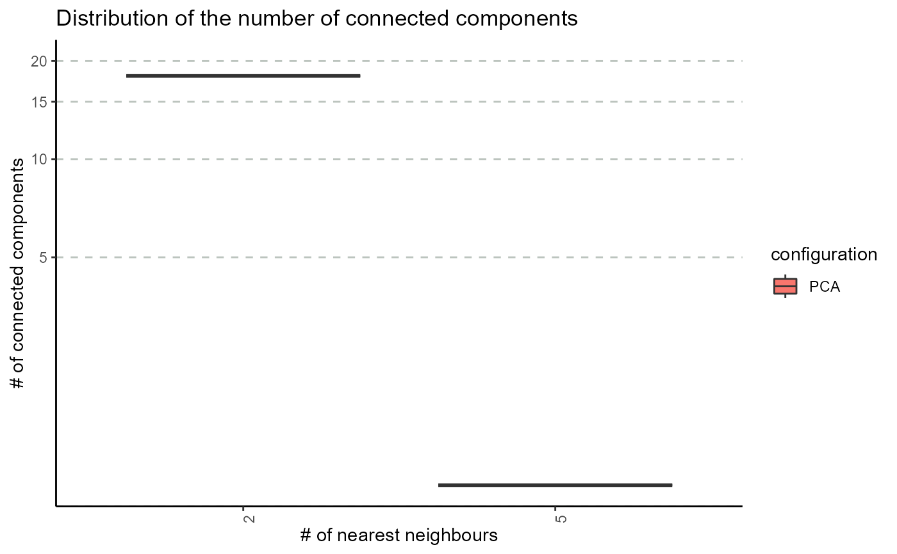

Relationship Between Nearest Neighbours and Connected Components
Source:R/stability-2-graph-construction.R
get_nn_conn_comps.RdOne of the steps in the clustering pipeline is building a k-nearest neighbour graph on a reduced-space embedding. This method assesses the relationship between different number of nearest neighbours and the connectivity of the graph. In the context of graph clustering, the number of connected components can be used as a lower bound for the number of clusters. The calculations are performed multiple times by changing the seed at each repetition.
Usage
get_nn_conn_comps(
embedding,
n_neigh_sequence,
n_repetitions = 100,
seed_sequence = NULL,
include_umap = FALSE,
umap_arguments = list()
)Arguments
- embedding
A matrix associated with a PCA embedding. Embeddings from other dimensionality reduction techniques (such as LSI) can be used.
- n_neigh_sequence
A sequence of the number of nearest neighbours.
- n_repetitions
The number of repetitions of applying the pipeline with different seeds; ignored if seed_sequence is provided by the user. Defaults to `100“.
- seed_sequence
A custom seed sequence; if the value is NULL, the sequence will be built starting from 1 with a step of 100.
- include_umap
A boolean value indicating whether to calculate the number of connected components for the UMAP embedding. Defaults to
FALSE.- umap_arguments
Additional arguments passed to the the
uwot::umapmethod.
Value
A list having one field associated with a number of nearest neighbours. Each value contains an array of the number of connected components obtained on the specified number of repetitions.
Examples
set.seed(2024)
# create an artificial PCA embedding
pca_emb <- matrix(runif(100 * 30), nrow = 100, byrow = TRUE)
rownames(pca_emb) <- as.character(1:100)
colnames(pca_emb) <- paste0("PCA_", 1:30)
nn_conn_comps_obj <- get_nn_conn_comps(
embedding = pca_emb,
n_neigh_sequence = c(2, 5),
n_repetitions = 3,
# arguments that are passed to the uwot function
umap_arguments = list(
min_dist = 0.3,
metric = "cosine"
)
)
plot_connected_comps_evolution(nn_conn_comps_obj)
#> Warning: log-10 transformation introduced infinite values.
